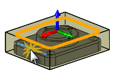

<div id="useStockContours"><p>仕上げ加工が必要なストックの外周を指定します。</p>
<table class="tipTable" cellspacing="10">
<tr>
<td><center></center></td>
<td><center></center></td>
</tr><tr>
<td><center><p><b>無効</b></p></center></td>
<td><center><p><b>有効</b></p></center></td>
</tr></table>
<p><b>無効</b>: 設定内で定義されているストックの外周が使用されます。</p>
<p><b>有効</b> - 選択した面またはエッジがモデルのトップに投影されます。</p>
</div>